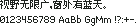

字样资料 / LanaPixel
LanaPixel 11px（9×9 汉字，10px 字宽）
样文完整 · 10×11 · 简体
放大观察 · 3×

原尺寸 · 1×
来源与字样信息
- 家族
- LanaPixel
- 字符框
- 10×11 px
- 字符范围
- 简体
- 样本文字
- 视野无限广，窗外有蓝天。
- 拉丁样文
- 0123456789 AaBb GgMm !?:+-.
- 覆盖说明
- 样文完整
- 缺字
- 本次样本文字未发现缺字；不代表完整字库覆盖
- 风格
- 未分类
- 用途
- 像素字体
- 字形来源
- 上游eishiya（https://mastodon.art/@eishiya）发布的LanaPixel包，本站收录lanapixel_everything中的LanaPixel.ttf（含谚文的完整版，2023-02-22），由ttf按11px栅格化——上游说明该字体设计于11px及其整数倍显示。发行包另有NoKorean（去谚文）与BitmapOnly（仅内嵌点阵、无轮廓）两个构建，字形相同，本站未另行收录。 本轮直接解码 FontPixel BDF 的 BITMAP；不使用系统字体或任何缺字回退。 字号为 11px，汉字墨迹 9×9，汉字原生字宽 10px；拉丁字符原生不等宽。 本次修订：按原字库提取繁简对应字与实际显示码位；
- 授权状态
- 已有许可线索
- 许可说明
- OFL-1.1；上游LanaPixel.md写明可任选SIL Open Font License或CC BY 4.0，两份授权原文随包分发。本站按OFL收录，随附LanaPixel_OpenFontLicense.txt。
- 说明
- 统一新样文；拉丁字宽按源字体保留，可能为全角、半角或原生不等宽。样文覆盖不代表完整字库覆盖。 原生像素设计已有上游证据；转换BDF与原字体的逐字像素一致性尚未独立完整核验。
- 来源
- 来源项目 / 资料页
- 原生证据
说明：上游明确为原生像素设计，TTF是像素轮廓或点阵封装，非普通矢量字体任意取模。本样张直接读取已转换BDF；转换与原始源字体的逐字像素一致性尚未独立完整核验。
designEvidence：verified_native_pixel_design
conversionFidelity：not_independently_fully_verified
查看原生设计来源
仅展示固定字样，不提供字体文件。预览不授予字体使用许可；样文覆盖不等于完整字库覆盖，实际使用前请核实来源项目的适用授权。